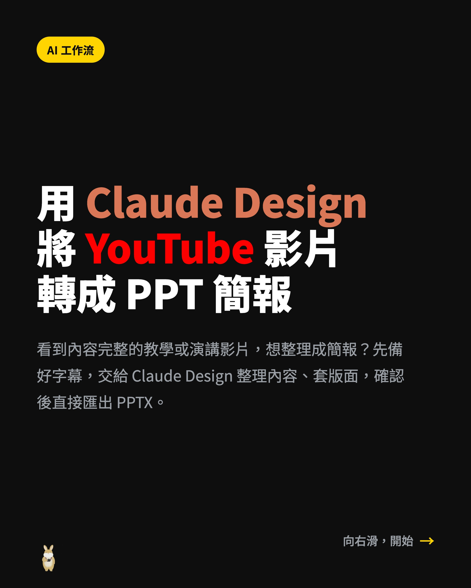

Threads｜Claude Design 將 YouTube 影片轉成 PPT：字幕＋設計規範檔的簡報再利用工作流

為什麼保存
這則 Threads 不是單純介紹「AI 幫忙做簡報」，而是把影片內容再利用拆成一個可重複的工作流：先準備 YouTube 影片連結與字幕檔，再交給 Claude Design / Claude Artifacts 類畫布環境整理內容、套版面、對話修改，最後匯出 PPTX。
對課程、講座、教學影片與社群內容經營來說，這是一個很實用的轉換模式：影片本身是長內容，字幕是可結構化的文字素材，設計規範檔則把品牌風格與簡報版型固定下來。真正有價值的不是「一鍵」這個說法，而是把「影片 → 逐字稿 → 簡報大綱 → 視覺版型 → PPTX」整理成可審稿、可重跑的流程。
貼文與圖卡可見重點
Threads @eason13419 的貼文寫道：Claude Design 現在能將 YouTube 影片轉成 PPT 簡報；只需要丟給 Claude Design YouTube 影片連結與字幕檔，剩下交給 Claude Design，一鍵轉成 PPT。
圖卡可見文字：
> AI 工作流
> 用 Claude Design 將 YouTube 影片轉成 PPT 簡報
> 看到內容完整的教學或演講影片，想整理成簡報？先備好字幕，交給 Claude Design 整理內容、套版面，確認後直接匯出 PPTX。
留言補充連到 YouTube 影片：科技兔「【AI教學】用 Claude Design 將 YouTube 影片轉成 PPT 簡報」，影片長度約 5 分鐘。
YouTube 教學摘要
影片 transcript 顯示，流程大致分成五段：
| 時間 | 重點 | 實作意義 |
|---|---|---|
| 0:06–0:57 | 介紹 Claude Design 可用 YouTube 網址與字幕檔生成 PPT；Claude Design 是可對話、可預覽、可反覆修改的視覺設計工作區。 | 把它定位成「設計協作者」，不是單純圖片生成器。 |
| 0:59–1:10 | 適合工具教學、知識課程、演講訪談、影片內容再利用。 | 適合以語音/字幕為主、結構清楚的長內容。 |
| 1:11–2:36 | 建議先準備「設計規範檔」，包含品牌概觀、設計原則、色彩、字體、版面、元件、教學版型、文案規則與 do/don't。 | 決定輸出是否穩定、是否符合品牌，不應每次只靠臨場 prompt。 |
| 2:37–4:23 | 建立 Claude Design 專案、上傳設計規範檔、貼 YouTube 影片網址與字幕檔，產生簡報後透過聊天修改，滿意後輸出簡報下載。 | 工作流重點是「生成後可修」，不是一次輸出就結束。 |
| 4:25–4:48 | 有字幕、以說話內容為主的影片最適合；沒有字幕的影片較不適合。 | 影片轉 PPT 的品質高度依賴逐字稿/字幕品質。 |
官方查核：Claude 可產出簡報檔，但影片理解仍需素材品質
Anthropic 官方 blog「Claude can now create and edit files」說明：Claude 可以回傳 ready-to-use spreadsheets、documents、presentations 與 PDFs，而不只是文字回覆。這支持「Claude 產出簡報檔」的大方向。
Claude Help Center 的 Artifacts 文件也說明：Artifacts 是可編輯、可迭代、可下載、可在對話外使用的內容；使用者可以下載 artifact 檔案，或複製底層內容繼續加工。
不過，官方文件的支持點是「Claude 可建立/編輯/下載文件與簡報」以及「Artifacts 可作為可迭代內容視窗」。本文沒有把社群貼文中的「任何 YouTube 一鍵變 PPT」當成官方承諾。比較準確的說法是：若使用者提供影片連結、字幕/逐字稿、設計規範與明確輸出格式，Claude 可以協助把內容整理成 PPTX；但成功品質仍取決於輸入資料、帳號方案、當前 Claude 功能可用性與人工審稿。
可複用的工作流模板
```text
我想把這支 YouTube 影片整理成 16:9 PowerPoint 簡報：
[貼上影片連結]
我會提供字幕/逐字稿與設計規範檔。請依照以下流程：
- 先閱讀字幕，整理影片主旨、章節與可做成投影片的段落。
- 依設計規範檔規劃簡報架構，先列出每頁標題、重點、視覺建議與資料來源。
- 產生一版 PPTX 草稿，避免每頁塞太多字。
- 對每頁標註引用來源時間點，方便我回看影片檢查。
- 輸出前請自我檢查：是否漏掉重要章節、是否誤解影片內容、是否有素材授權問題。
```
如果要更穩定，建議把「設計規範檔」固定成專案資產，內容至少包含：品牌色、字體、標題/內文字級、封面/章節/步驟/比較/結論版型、圖片與截圖規則、每頁文字量上限、引用與版權標示規則。
對欒帥的應用建議
這個流程很適合放進「AI 課程內容再利用」單元：
- 課程錄影先產生校正過的字幕。
- Claude 先整理章節，不急著直接做 PPT。
- 用固定 DESIGN.md / 簡報設計規範決定版面。
- 產出 PPTX 後，由人檢查術語、時間點、引用、圖像授權與教學順序。
- 同一份字幕可再輸出講義、社群貼文、測驗題與課後摘要。
對教學者來說，最重要的是把 AI 放在「整理與初稿」位置，而不是讓它取代審稿。影片內容如果牽涉產品功能、價格、政策、法規或醫療/財務建議，仍需回到官方來源或原影片逐段核對。
風險與限制
- 「一鍵轉 PPT」是社群行銷式說法；實務上仍需要字幕、設計規範、修改與審稿。
- 沒有字幕或 ASR 錯字很多的影片，會大幅降低內容理解與投影片摘要品質。
- YouTube 影片、縮圖、截圖、講者內容與第三方素材可能有版權/授權限制；產出簡報前要確認使用範圍。
- Claude 可能把口語內容過度簡化、改寫或補腦；重要數字、工具步驟與引用應回看原影片驗證。
- 不同 Claude 方案、地區、功能開關與 UI 版本可能影響「Design / Artifacts / file creation / PPTX export」可用性。
來源
- Threads 原貼文：`https://www.threads.com/@eason13419/post/Dbkjar-IK37`
- YouTube 影片：`https://youtu.be/Q8jhXxeFjmg`
- 科技兔圖文教學：`https://www.techrabbit.biz/48462/`
- Anthropic 官方：`https://claude.com/blog/create-files`
- Claude Help Center Artifacts：`https://support.claude.com/en/articles/9487310-what-are-artifacts-and-how-do-i-use-them`